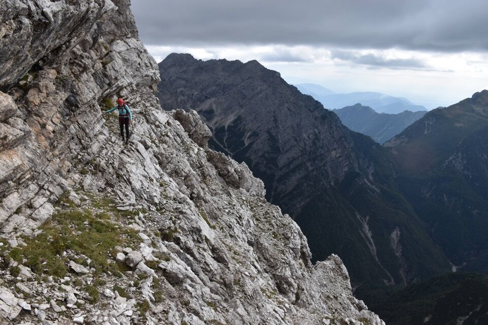
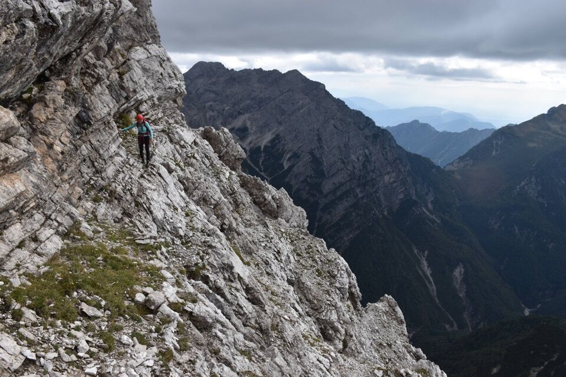
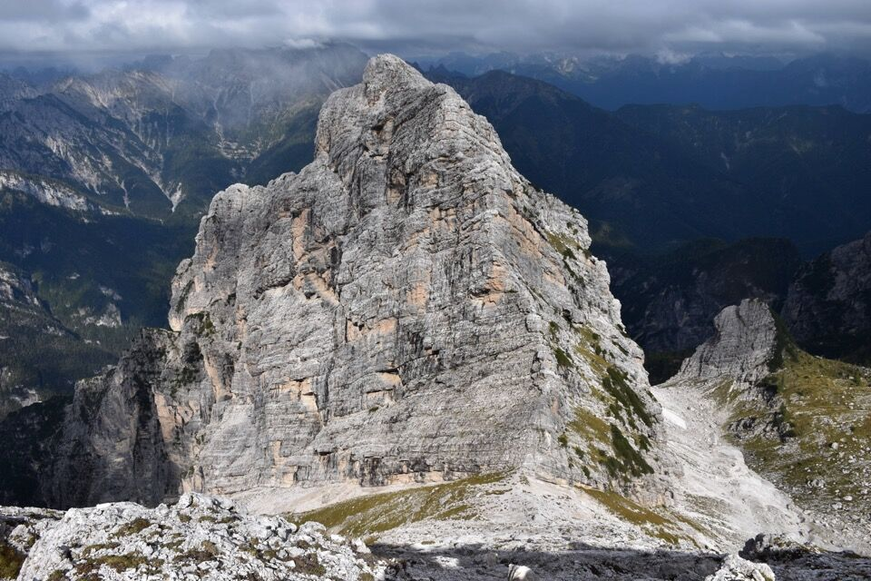
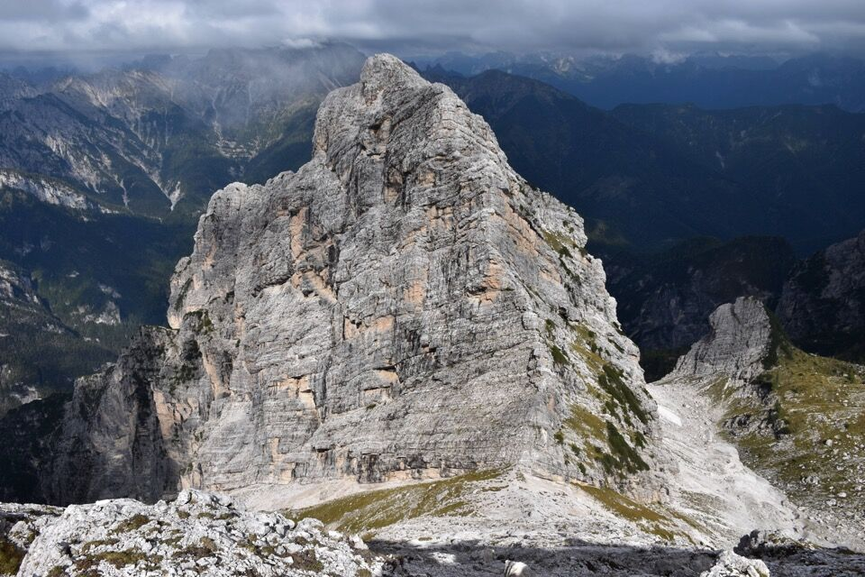

Facile ma sempre strettissima, questa cengia mi sembra un miracolo della natura: non solo per il fatto che sia percorribile, ma che pure ci sia uno sbocco verso l'alto con difficoltà quasi escursionistiche. Fatte di camoscio su tutto il percorso.
Forse sarebbe idealisticamente piú opportuno partire dalle Grave di Gere: preferisco guardare il faccia il monte da salire. Conosciamo almeno due modi sia per arrivare alla cengia che per scendere dalla Frata de Barbin. Qui c'è da sbizzarrirsi!
Una fresca mattina di settembre ci vede in cammino in val de la Meda.

Molto belle le placconate del nostro monte.

Anche il Cimon de le Tempie fa la sua sporca figura.
Fra i due la forcella Savalòn. Ma... perché fare il giro del mondo? Bella domanda.


Le selvagge crode clautane.

Dalla forcella ad Ovest di Cima Podestine iniziamo a scendere, basandoci su alcune foto che avevo scattato dai monti vicini.

Sperin ben...

Di là vediamo il grandioso itinerario da Sud a Cima della Meda che abbiamo percorso a maggio.

Agguantata la cengia.

Sempre strettissima.


La cengia va a sbattere contro il superbo diedro Sud del Cornaget.
 

E via su per simpatici canalini.

Meglio evitare gli strapiombi cercando i punti piú facili.

Questi sono i canalini (foto d'archivio dalla Frata de Barbin). A 2/3 abbiamo preso quella fessura obliqua (vedi foto precedente).
 



Per me la prima volta sul Cornaget, per Greta la terza.

Prossimo giro?
Cima di Bortolusc illuminata dietro al Bus de Nefe.

Pure qualcuno sulla Frata de Barbin.


Scorci di grande bellezza nel Ciadin de la Meda.


***